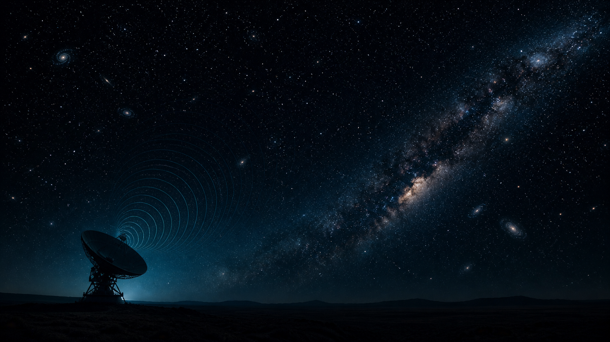
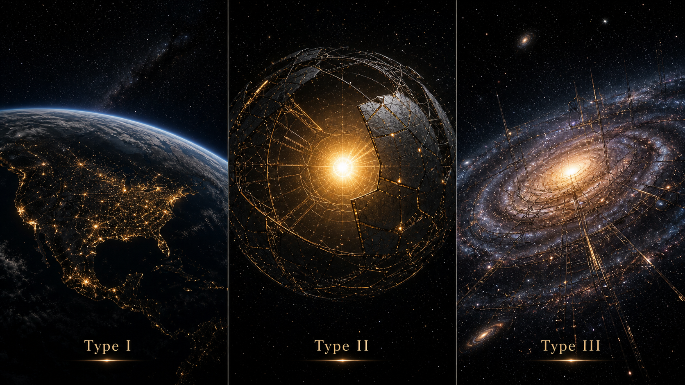
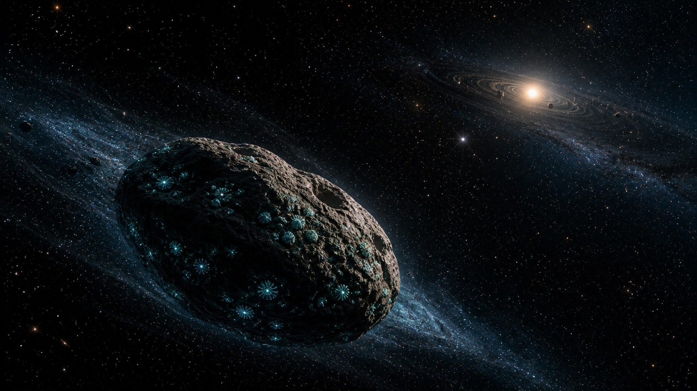

The universe is too large for intuition, and intuition has filed a complaint.
We live inside one spiral galaxy among many. The Milky Way alone contains hundreds of billions of stars, and planets are now known to be common. NASA announced in 2025 that the official confirmed exoplanet count had reached 6,000, with many additional candidates still awaiting confirmation.
That number is important because it changes the emotional centre of the question. We are no longer asking whether planets are weird rare accessories around stars. They are not. Planets are normal. The harder question is whether habitable environments, life, intelligence, and long-lived technological behaviour are normal.
The painful point is this: the same vastness that makes life seem statistically plausible also makes communication technically brutal. Space is generous with possibilities and stingy with evidence.
The Drake equation is not an alien calculator. It is a labelled map of our ignorance.
The Drake equation is often misunderstood as a machine where you insert numbers and receive a confident alien count. That is not how I use it. I think of it as structured uncertainty. It forces us to separate astronomy, biology, intelligence, technology, and civilisation lifetime instead of throwing them into one vague cosmic soup.
\(N\) is the number of detectable communicative civilisations in the Galaxy right now.
The astronomical terms are becoming better constrained because telescopes are doing their job. The biological and sociological terms remain ferociously uncertain. We know planets are common. We do not know how often chemistry becomes biology. We know intelligence happened once. A sample size of one is scientifically rude.
Move the sliders and watch certainty collapse with excellent typography.
This module is not claiming to predict alien civilisations. It is designed to show sensitivity. If one poorly known biological factor changes by orders of magnitude, the answer swings violently. That is the point.
Drake Equation Extreme Lab
Adjust astronomical, biological, technological, and lifetime assumptions. Scientific Mode changes the slider interpretation to show conservative vs optimistic uncertainty.
A number near one does not mean aliens are nearby. It means the assumptions have not crushed the answer below one.
If possibilities are abundant, why does the Galaxy sound like an abandoned server room?
The Fermi paradox is the tension between cosmic abundance and observational silence. It is not a proof that aliens should be waving at us. It is a pressure point: if planets are common and the Galaxy is old, why have we not found unambiguous evidence of other technological civilisations?
There are many possible answers. Life may be rare. Complex life may be rare. Intelligence may not be an inevitable evolutionary outcome. Technological civilisations may be short-lived. They may not use radio for long. They may be quiet by choice. They may be too distant. Or, more embarrassingly, we may simply not have searched the right region of signal space.

A civilisation can exist and still be missed if it does not transmit, transmits in the wrong direction, uses the wrong band, appears at the wrong time, or falls below instrumental sensitivity.
Choose your silence explanation. The Galaxy will remain emotionally unavailable.
This module turns the Fermi paradox into a signal-chain problem. As someone interested in instrumentation and signal processing, I prefer this framing: the source may exist, the transmitter may work, the medium may distort it, the receiver may be inadequate, and the analyst may still mistake the signal for noise.
Fermi Filter Matrix
Move the failure points and watch the probability of detection shrink. This is basically a cosmic communications link budget with existential dread.
Under these settings, silence is not surprising. The Galaxy may be full of subtle signals and we may be sampling a very small slice.
Advanced civilisation also means energy. Unfortunately, we are still not Type I.
The Kardashev scale classifies civilisations by energy use. It is not a morality scale, and it does not measure wisdom. If it did, humanity would need a separate remedial category. The scale is useful because energy use can, in principle, leave observational traces.
In one common formulation, \(P\) is the civilisation power use in watts and \(K\) is a continuous Kardashev index. Type I is planetary-scale energy use, Type II is stellar-scale, and Type III is galactic-scale.

Kardashev Energy Slider
Move from Type 0 to Type III and see why technosignatures become less about biology and more about energy budgets.
Below Type I: impressive for one species, not especially impressive for a star.
Maybe the ingredients travel better than organisms.
Panspermia is the idea that life, or at least the chemical ingredients of life, can move between worlds through rocks, dust, comets, or asteroid fragments. It does not solve the origin-of-life problem. It moves part of the problem into space, which is a very astrophysics thing to do.
Still, the idea is not nonsense. Meteorites and asteroid samples show that organic chemistry is not confined to Earth. The universe manufactures carbon-bearing molecules with suspicious enthusiasm. Whether that chemistry routinely crosses into biology is the difficult part.

SETI is not just “listening”. It is detection theory with cosmic anxiety.
SETI is sometimes described as listening for aliens, which is poetic but technically incomplete. A better description is: searching an enormous parameter space for signals whose form, timing, frequency, bandwidth, repetition, and modulation are unknown.
This is where my instrumentation brain becomes very interested. A signal is never just a signal. It has a source, propagation medium, receiver sensitivity, noise environment, calibration limits, data-processing pipeline, false-positive rejection, and interpretation layer. If even one of those fails, the universe remains silent in your dataset.
Here \(S\) represents signal strength, \(B\) bandwidth, \(t\) integration time, and \(N\) noise. This is not the full radiometer equation, but it captures the spirit: weak signals require sensitivity, time, and careful noise control.
Modern telescopes are turning “life elsewhere” from philosophy into spectroscopy.
JWST has shown how powerful exoplanet atmosphere spectroscopy can be for favourable systems. One key example is the detection of carbon dioxide in WASP-39b’s atmosphere using transmission spectroscopy. That is not a life detection, but it is a demonstration that atmospheric chemistry around other stars is measurable.
The important step for astrobiology is not merely detecting molecules. It is interpreting molecules in context. Oxygen alone is not automatic life. Methane alone is not automatic life. Carbon dioxide alone is definitely not life, unless rocks have suddenly learned social media. The real prize is atmospheric disequilibrium plus planetary context plus repeated confirmation.
\(R_p\) is the planet radius, \(R_\ast\) is the stellar radius, and \(h(\lambda)\) is the wavelength-dependent atmospheric height caused by absorption. The atmosphere writes tiny wavelength-dependent dents into starlight.

Part II moves from scale to constraints.
Part I asked why the question is enormous. Part II should ask what the numbers actually allow. How common are potentially habitable planets? How much of the SETI search space has been sampled? What would count as a credible biosignature? What future instruments might finally turn the silence into data?
The honest answer is still unsatisfying: we do not know whether we are alone. But the question is becoming more observational and less purely philosophical. That matters. The universe has not answered yet, but for the first time, our instruments are learning how to ask properly.
Selected sources used for the scientific claims.
These links are included so the blog remains traceable. The tone can be sarcastic; the sources should not be.
Comments & reactions
Powered by GitHub Discussions via giscus. Leave a question, correction, or existential panic below.